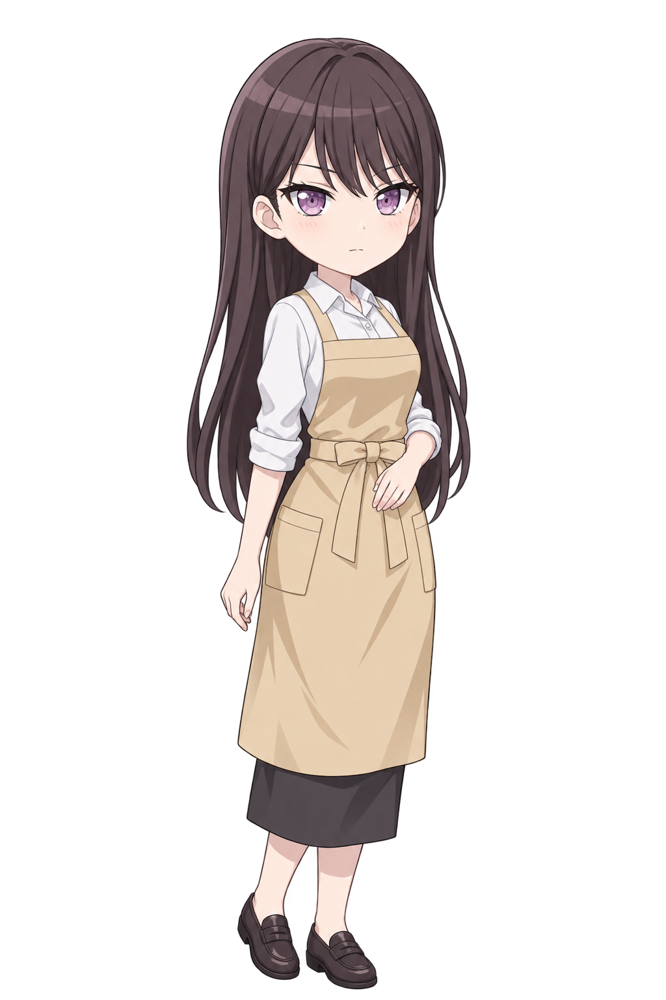
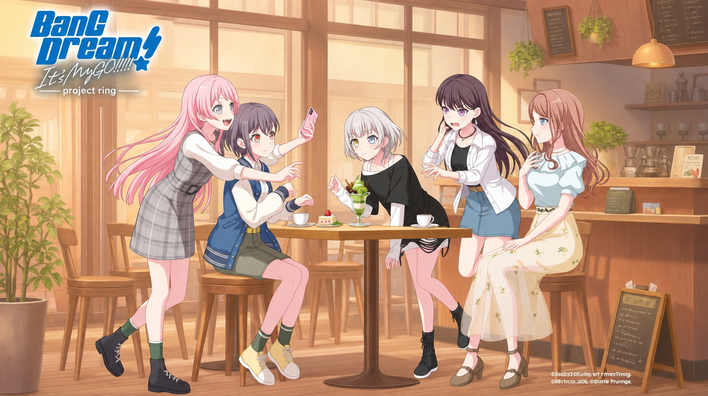

영업 준비
RiNG café & live
문을 열면 손님이 찾아옵니다

椎名 立希 타키오픈 준비 중

카페 재즈 · Bossa Antigua
차분한 기타와 베이스, 드럼이 흐르는 카페 BGM입니다. 타이틀에서는 제공해 주신 inst가 재생됩니다.
Bossa Antigua — Kevin MacLeod (incompetech.com)
Creative Commons: By Attribution 4.0 License
원본 음원, 반복 재생
